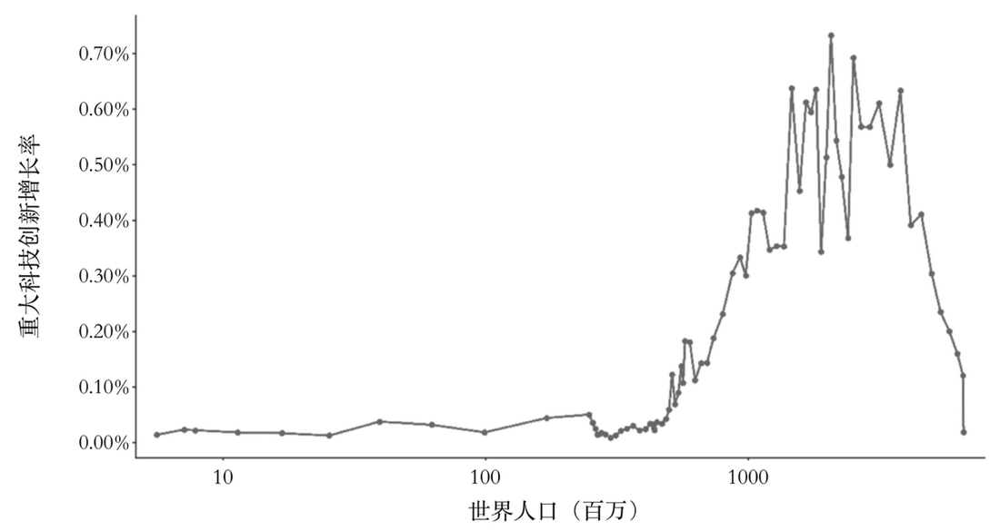
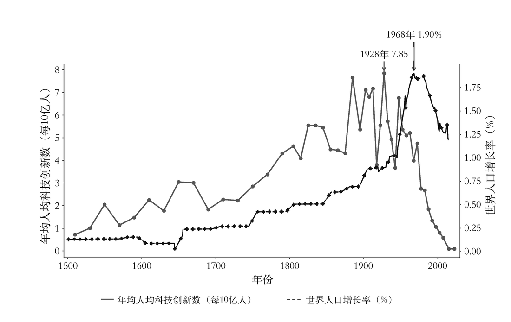

人口越多，重大创新就越多吗？人口规模与科技创新有什么关系？
人口越多，重大科技首创就越多吗？受教育者和科研人员不断增加，是否就能使重大突破持续加速？人口规模与创新的关系，既涉及创造者的数量，也涉及人类怎样把已有知识转化为新的发现。沿着这一问题，还可以进一步讨论：人口与经济增长在多大程度上由重大创新带动，广泛的日常改进又在其中发挥什么作用？
马尔萨斯关注人口增长对生活水平的压力，熊彼特强调企业家的创新怎样推动经济变化；索罗把技术进步引入经济增长分析，罗默进一步把知识生产放入增长机制之中。知识能够被不同的人反复利用，新知识又能为后来者提供创造条件，由此形成累积效应。这条思路也提出了一个值得检验的问题：知识生产者越来越多，重大科技成就的增长是否会相应加快？我们从长时段的重大首创与人口数据入手，考察这种规模关系。
作者与同事于2016年发表的研究，比较了过去一万年的科技成就与人口规模变化。人口数据采用Manning汇集的多个历史估计序列，科技数据来自我们的数据库。图I-8、图I-9已按2026年更新的成就数据重绘，用来观察人口规模与重大首创之间的历史相关关系。
图I-8 近万年年均人均（每10亿人）重大科技成就数的变化。上图为公元前的千年平均，下图为公元后数据，采用约十年尺度；两图时间分辨率不同。人口采用Manning（2008）所汇集12个数据源插值后的平均值，成就采用2026年更新的数据库。
图I-9 重大科技成就增长率与世界人口规模的散点图，人口横轴采用对数标尺。数据口径同图I-8。

在这一统计口径下，我们观察到几项值得讨论的现象。
图I-8显示，人均年均重大科技成就数在二十世纪二十年代前后达到高点，此后明显下降。也就是说，世界人口继续扩大，每十亿人每年产生的重大首创却减少了。更值得注意的是，过去百年各地的教育普及、科研人员规模、研究设施和资金投入大幅增长，创造知识所拥有的人力与物力条件远胜从前。这种投入扩张与人均重大首创下降的反差，正是我们研究中最值得追问的现象之一。
图I-9把这种变化放在人口规模上观察：世界人口较少的阶段，重大科技成就增长率与人口规模呈正相关；人口超过约20亿后的部分时段，两者转为负相关。人口扩大确实增加潜在创造者、市场与协作机会，但重大突破并未随人数增加而自动加速。从这一结果看，“人越多，好主意越多”的直觉需要进一步展开：“人海战术”可以扩大研究和改进活动，却难以保证重大首创按比例增长。问题的关键随之转向，什么样的知识积累、探索方式和组织环境，更有利于突破出现。
科研投入增加而突破相对减少，促使我们重新思考创新的投入方式。既有知识越来越复杂，进入前沿需要更长训练，研究又越来越依赖昂贵设备与多人协作；资源如何分配、是否容纳偏离主流的想法，也影响探索方向。作者更关心的是：不断扩大的科研体系，是否把足够的机会留给了能够开辟新路的问题。扩大投入与鼓励重大突破，需要在研究组织和评价机制中同时得到体现。
研究还观察到，在一些长时段中，重大科技成就增长的加速或放缓先于人口变化。这为作者的一个判断提供了线索：重大创新能够先打开新的生存与发展空间，人口和经济随后在这个空间中扩展。农业增加食物供给，医学与公共卫生减少死亡，动力与机器扩大生产能力，都体现出这种作用。人口增长又扩大市场、分工和知识交流，反过来支持创造。两者形成反馈，重大突破在其中具有开辟新路径的作用。
图I-10把人均年均重大科技首创数量与世界人口增长率放在同一时间轴上。前者在二十世纪前期达到高点，后者在二十世纪中期达到高点，两条曲线的先后变化使这种反馈更加直观。我们据此关注科技突破怎样改变人口增长的条件，也关注人口扩张为什么未能带来同样幅度的重大创新增长。结语将继续讨论人口年龄结构，以及中国、美国等地区未来的人口变化与科技趋势。
图I-10 人均年均重大科技首创数量（每10亿人）与世界人口增长率。基于2026年版“重大科技成就数据库”、Manning（2008）人口数据库及联合国人口数据计算；人口增长率经11年滑动平均平滑。

重大创新与微创新共同构成科技发展的结构，可以把它们想象为一座金字塔：顶端是数量较少、能够打开新方向的重大首创，下面是数量庞大、持续展开的改进与应用。本数据库重点观察顶部的重大成果，论文、专利和产品更新则记录更广泛的创造活动。因此，人们感受到产品更新加快、应用越来越丰富，与人均年均重大首创减少可以同时发生。科技活动的热闹程度与重大突破的产生节奏，呈现的是两个不同侧面的变化。
微创新主要在已有知识、技术和产品基础上改进性能、降低成本、增加功能，或使产品适应新的使用场景。单次变化可能很小，数量却多，且直接贴近生产与生活。一项重大发明只有经过大量这样的改进，才能变得可靠、便宜、易用，最终惠及广泛人群。微创新积累的工艺、工具、数据和使用经验，也可能成为下一轮重大突破的基础。
重大科技创新的作用，在于扩展可供后人继续创造的空间。作者从技术与产业变化的角度，将其概括为三种常见路径：利用新的科学原理创造技术、产品乃至产业；从能源、材料等基础层发生突破，重组整个产业体系；在既有产业中创造重要的新技术或新产品，打开新的应用领域和市场。重大科学发现本身还会改变人们理解自然的方法，为这些路径提供新的知识基础。
一项重大成就往往具有很长的生命力，并在周围催生密集的后续创新。电磁学、电力技术和电子器件先后打开新的可能性，众多创造者再把它们发展为照明、通信、计算和各种生产设备。重大创新开出新方向，微创新把这条路拓宽、铺实，并把新问题带回探索的前沿。两者由此形成接力。若长期缺少新的重大突破，沿旧路线改进的难度可能越来越高，新增收益逐渐缩小，经济也会面临增长动力减弱的压力。
从创造过程看，也可以辨认两种相互补充的方式。一种由理论、想象或整体设计出发，提出当前市场尚未表达的新可能；另一种从用户和实际问题出发，在反复试验与反馈中改进。前者可能开辟新产业，后者使新能力进入具体生活；实际的重大创新往往会在两者之间往返。科技政策与企业经营如何兼顾长期探索和眼前需求，会影响重大创新与微创新各自获得的资源。
如果把打开新方向的重大创新者称为“英雄”，那么重大科技成就先于人口变化的观察，确实使这些少数创造者的历史作用格外醒目。但一项突破周围，还有大量工匠、工程师、使用者和无名改进者，使它能够成为改变生活的力量。失败的探索同样留下知识：它们揭示困难、排除走不通的路径，为后来者节省代价。从这个意义上说，英雄与人民共同创造历史，重大突破与广泛参与在同一个过程中各有其位置。
有些重大创新还会引发社会结构的跃迁。新技术改变成本、能力和组织方式，使新行业和新群体兴起，原有职业与利益关系随之调整；经过竞争和重组，社会逐渐形成新的运行秩序。这种变化可以借“相变”来理解。重大创新开辟的空间越大，随后微创新、产业扩张和社会调整的过程就越广泛。科技史因此既是发现与发明的历史，也是这些成果怎样成为社会力量的历史。
接下来的各章，沿着六类需求展开。让我们首先回到人类走出非洲的时刻，接近先辈的生活场景，追随知识和工具的创造与传播，体会创新的欣喜与艰辛，也由此思考未来。
[1] 董洁林，曹钰华，茅莉丽. 历史科技成就统计与欧洲中心主义[J]. 科学学研究，2014，32(7)：987–995.
[2] 董洁林，陈娟，茅莉丽. 从统计视角探讨中国历史科技发展特点[J]. 自然辩证法通讯，2014，36(3)：29–36.
[3] 董洁林. 人类科技创新简史：欲望的力量[M]. 北京：中信出版社，2019.
[4] Acemoglu, D., and Robinson, J. A. Why Nations Fail: The Origins of Power, Prosperity, and Poverty[M]. New York: Crown Business, 2012.
[5] Arthur, W. B. The Nature of Technology: What It Is and How It Evolves[M]. New York: Free Press, 2009.
[6] Basalla, G. The Evolution of Technology[M]. Cambridge: Cambridge University Press, 1989.
[7] Boserup, E. Population and Technological Change: A Study of Long-Term Trends[M]. Chicago: University of Chicago Press, 1981.
[8] Comin, D., Easterly, W., and Gong, E. Was the Wealth of Nations Determined in 1000 BC?[J]. American Economic Journal: Macroeconomics, 2010, 2(3): 65–97.
[9] Diamond, J. Guns, Germs, and Steel: The Fates of Human Societies[M]. New York: W. W. Norton, 1997.
[10] Dong, J., Li, W., Cao, Y., and Fang, J. How Does Technology and Population Progress Relate? An Empirical Study of the Last 10,000 Years[J]. Technological Forecasting and Social Change, 2016, 103: 57–70.
[11] Galor, O., and Weil, D. N. Population, Technology, and Growth: From Malthusian Stagnation to the Demographic Transition and Beyond[J]. American Economic Review, 2000, 90(4): 806–828.
[12] Jones, C. I. R&D-Based Models of Economic Growth[J]. Journal of Political Economy, 1995, 103(4): 759–784.
[13] Koltko-Rivera, M. E. Rediscovering the Later Version of Maslow’s Hierarchy of Needs: Self-Transcendence and Opportunities for Theory, Research, and Unification[J]. Review of General Psychology, 2006, 10(4): 302–317.
[14] Kremer, M. Population Growth and Technological Change: One Million B.C. to 1990[J]. The Quarterly Journal of Economics, 1993, 108(3): 681–716.
[15] Maddison, A. Maddison Database 2010[DB/OL]. Groningen Growth and Development Centre, 2010. https://www.rug.nl/ggdc/historicaldevelopment/maddison/releases/maddison-database-2010
[16] Malthus, T. R. An Essay on the Principle of Population[M]. Oxford: Oxford University Press, 1993.（原著1798年出版）
[17] Manning, S. Year-by-Year World Population Estimates: 10,000 B.C. to 2007 A.D.[EB/OL]. 2008. https://scottmanning.com/content/year-by-year-world-population-estimates/
[18] Maslow, A. H. A Theory of Human Motivation[J]. Psychological Review, 1943, 50(4): 370–396.
[19] Mokyr, J. The Gifts of Athena: Historical Origins of the Knowledge Economy[M]. Princeton: Princeton University Press, 2002.
[20] North, D. C. Institutions, Institutional Change and Economic Performance[M]. Cambridge: Cambridge University Press, 1990.
[21] Romer, P. M. Endogenous Technological Change[J]. Journal of Political Economy, 1990, 98(5): S71–S102.
[22] Schumpeter, J. A. The Theory of Economic Development: An Inquiry into Profits, Capital, Credit, Interest, and the Business Cycle[M]. New Brunswick: Transaction Publishers, 2008.（原著1911年出版）
[23] Solow, R. M. A Contribution to the Theory of Economic Growth[J]. The Quarterly Journal of Economics, 1956, 70(1): 65–94.
[24] Weber, M. The Protestant Ethic and the Spirit of Capitalism[M]. Translated by Kalberg, S. Los Angeles: Roxbury, 2002.（原著1904—1905年发表）
本文选自《欲望的力量：人类科技创新简史》（第二版）开篇“欲望与创新”——人口与科技创新：人口规模与科技创新。上一篇：三次科技革命：人类的三次科技大革命；开篇到此结束，连载待续：第一编 必需篇 生存与温饱。连载总索引见《欲望的力量》连载总索引。
本编其他连载：需求创新动力学：人类需求与科技创新的动力 · 科技六类价值：从需求看科技的六类价值 · 万年科技前沿：科技前沿演进的万年趋势 · 三次科技革命：人类的三次科技大革命